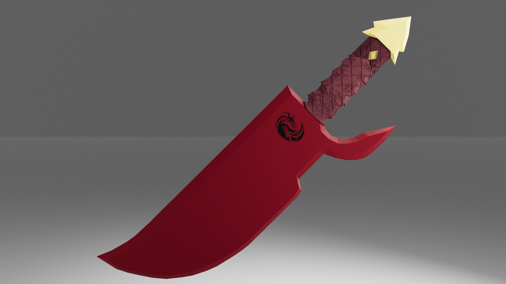
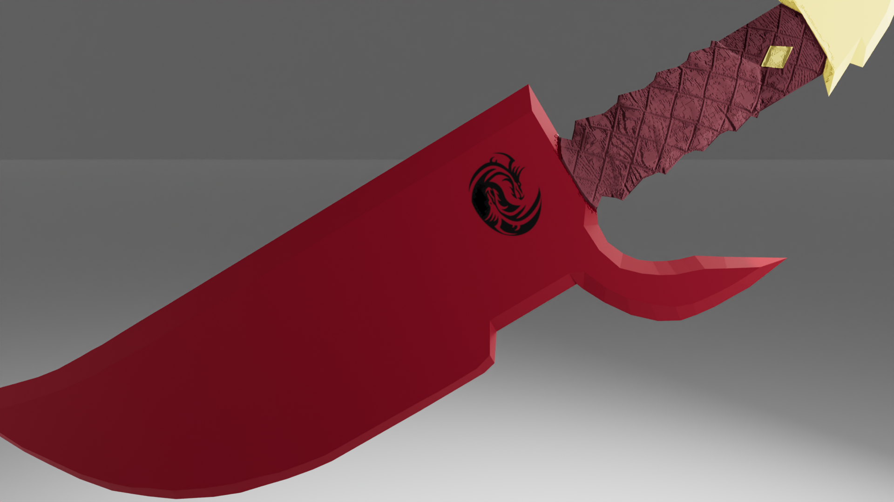
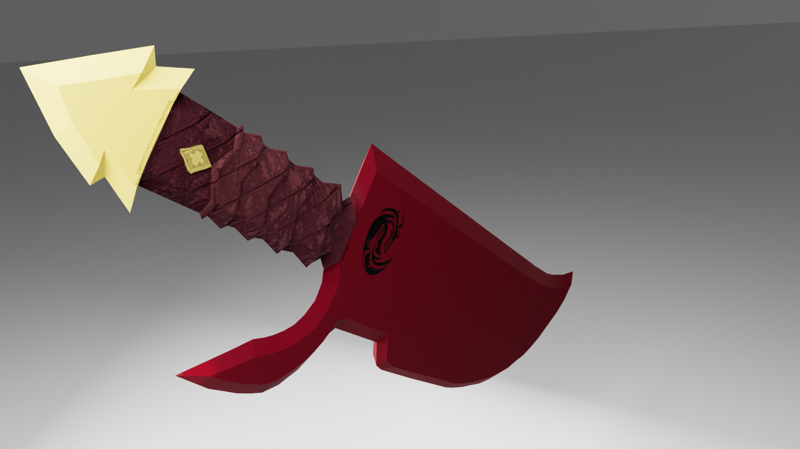
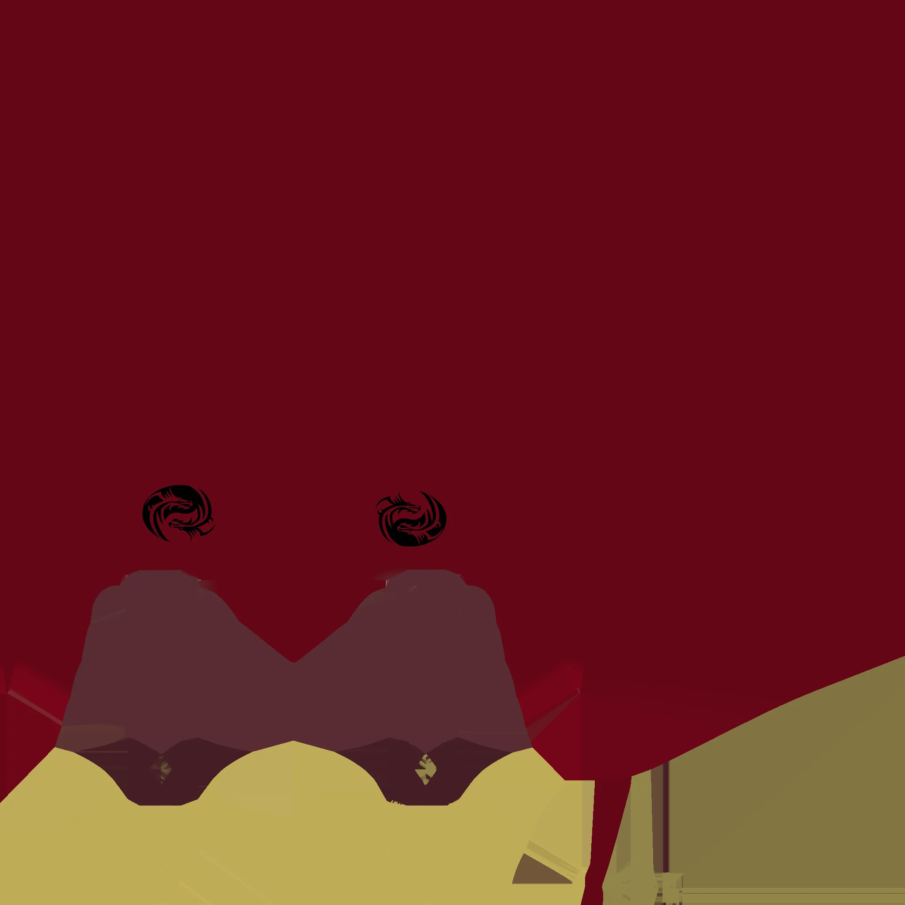
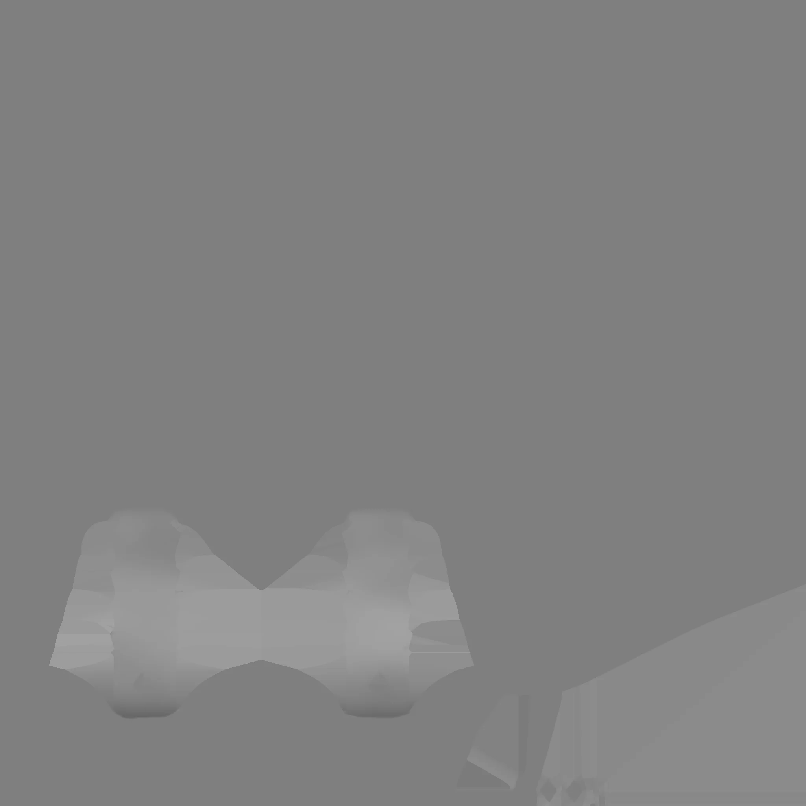
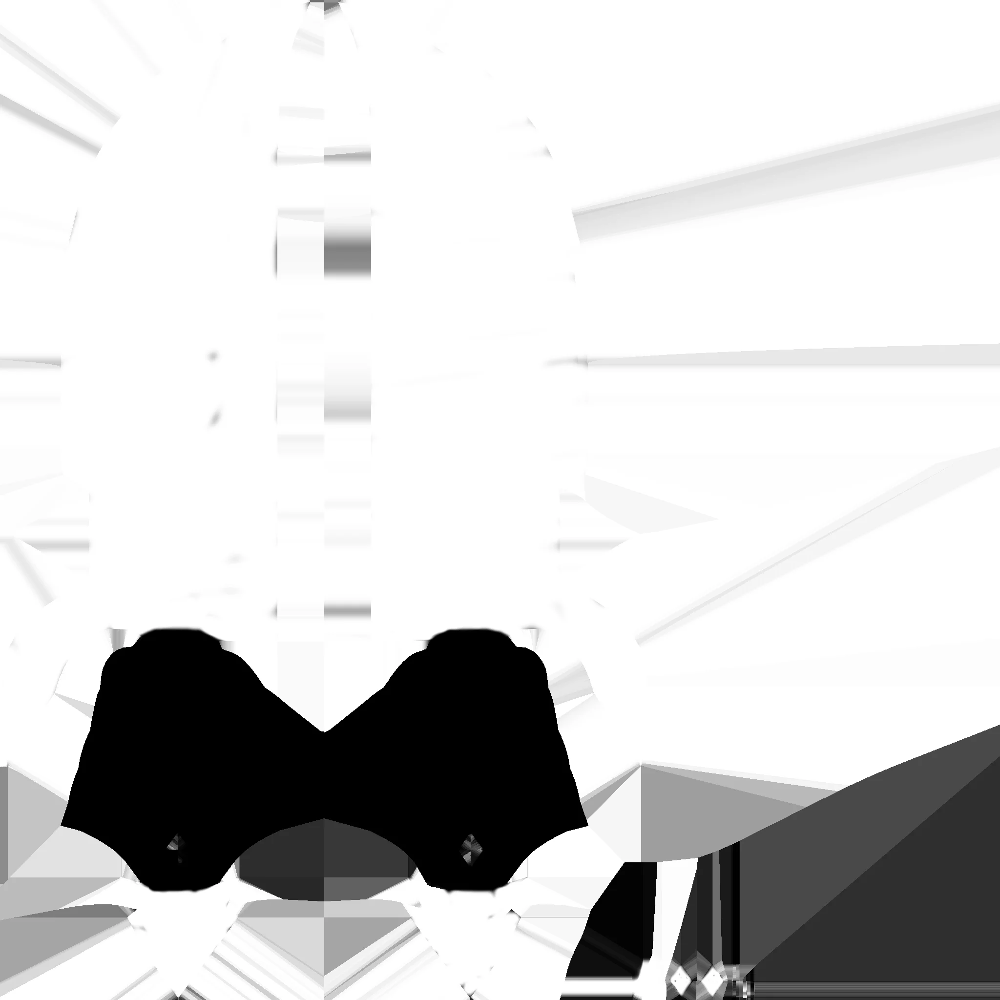
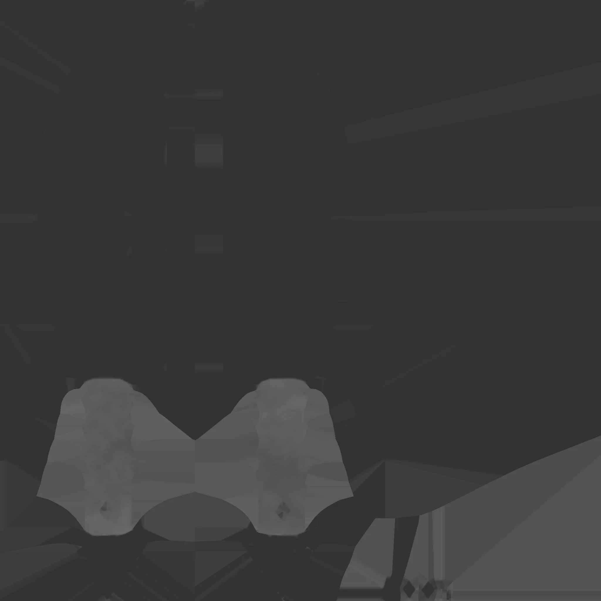
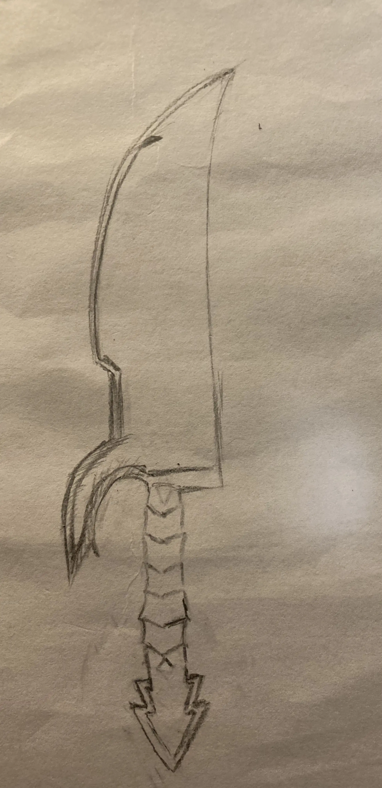
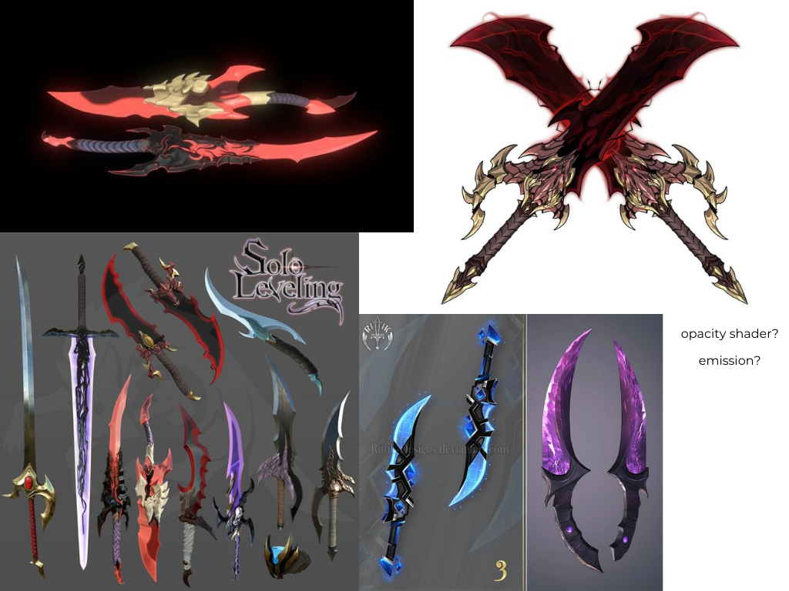

Project type:
Hard Surface Prop in Maya and Substance Painter.
Project description:
For this project, I designed and created a hard surface prop in Maya using multi-cut tool and texture painted in Substance Painter.
I gathered references and designed my own concept art.
The main objective for this project is to practice combining storytelling and modeling/sculpture by creating a detailed prop. I continued practicing my modeling and sculpture skills. The main challenge for this project is translating my research to a 3D asset. For texturing you may use realistic or stylized painting. You may also practice with low poly or high poly modeling on this project.
Date:
March 10 - 30, 2025
Role:
3D Modeler and Texture painter.
Project highlight:
Renders from different angles:



Textures:




Reference and Concept:


Reflection:
This project helped me learn how to use the Multi-Cut Tool in Maya to create a 3D hard surface model. As this was my first time modeling a hard surface prop, I aimed for a design that was simple yet visually unique.
During the texturing phase, I found it challenging to create clean and distinct borders between different materials. For example, there was a slight red paint overlap between the blade and the handle, and some smudging around the diamond-shaped gold ornament on the handle. While the overlap is barely noticeable in a game setting, it becomes visible when viewed up close.
To address this issue in future projects, I plan to assign separate materials to the blade, handle, and gold ornament in Maya before importing the model into Substance Painter. This will help prevent texture bleeding and ensure sharper, more defined material transitions.